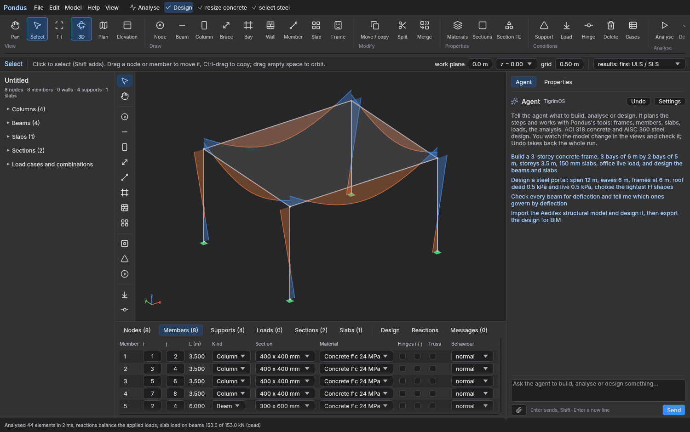

Install, use the agent, connect with MCP
This page gets you from the download to a designed building in a few minutes, first with the agent in Pondus's own chat, then with Claude Desktop, Claude Code or ChatGPT driving Pondus through its MCP server. The full technical description is in the README and the paper.
1. Install
Pondus is one program with no installer. Download the zip for your computer from the releases page, unzip it, and run it. Everything except the agent works offline and without an account.
macOS 11 or later (Apple Silicon and Intel)
- Download
Pondus-0.1.3-macos-universal.zipand unzip it. - Move
Pondus.appto your Applications folder. - The first time, right-click the app and choose Open, then Open again in the dialog. The app is not notarised, so a plain double-click is refused once by Gatekeeper.
The program inside the bundle, which the MCP setup below needs, is /Applications/Pondus.app/Contents/MacOS/pondus.
Windows 10 or later
- Download
Pondus-0.1.3-windows-x64.zipand unzip it to a folder you will keep, for exampleC:\Pondus. - Run
pondus.exe. If SmartScreen warns about an unknown app, choose More info › Run anyway. - Optional, for large models: an NVIDIA GPU with the CUDA 12 runtime and cuDSS 0.8 or later (
pip install nvidia-cudss-cu12, with the library folders onPATH) factorises big stiffness matrices on the card.pondus --gpureports whether it is used.
Build from source (macOS, Windows, Linux)
The workspace is self-contained, because the Stabileo engine and the TigrimOS agent harness are vendored inside it, so one command builds everything with a Rust toolchain.
git clone https://github.com/Sompote/pondus.git
cd pondus
cargo build --release # target/release/pondus and target/release/tigrim (about 12 min cold)
target/release/pondus # the app
target/release/pondus --mcp # the MCP server (see section 5)
target/release/pondus --about # licence notice and source link2. The window in one minute

- Ribbon (top): View, Draw, Modify, Properties, Conditions, Analyse, Slab, Dynamics and stability, Advanced and Report groups. Analyse runs the analysis, Design designs every member and slab, and the two ticks beside it let the design resize failing concrete and select the lightest steel shapes.
- Palette (left): the same drawing tools as the ribbon, which you can also drag onto the model.
- Model browser (left): columns, beams, walls, slabs, sections, and the load cases and combinations. Click an item to select it and see it in Properties.
- Tables (bottom): nodes, members, supports, loads, sections, slabs, the Seismic, Buckling and Design results, reactions and messages. Failing design rows are red.
- Agent and Properties (right): the chat with the agent, and the properties of whatever is selected, including a member's forces and its full code check after design.
- Status line (very bottom): the last analysis with its element count, time and whether the reactions balance the applied loads.
A good first run without the agent: Frame in the Draw group, accept the default spans and storeys, then Analyse, then Design, and look at the Design table and the colours in the view. PDF report in the Report group writes the calculation report next to the model file.
3. The agent in the chat
The Agent panel on the right runs a language-model agent on a copy of your model. For every message it plans the steps, calls Pondus's tools (the same commands the ribbon uses), and the views show its model as it saves it. When it is done, the result is your model, and one Undo takes back the whole run.
Settings: connect an AI provider
The agent needs an OpenAI-compatible provider. OpenRouter is the default because one key reaches many models, but any endpoint of the same API works. Click Settings at the top of the Agent panel and fill in:
| Field | What to enter |
|---|---|
| API URL | The provider's base address, for example https://openrouter.ai/api/v1. |
| Model | The model name as the provider spells it, for example anthropic/claude-sonnet-5 on OpenRouter. A stronger model plans better and describes its results more carefully; the paper's runs used a small, fast model and still got every number right. |
| Images | Auto asks OpenRouter whether the model takes pictures; set Yes or No for other providers. With a vision model you can attach a sketch or a plan and ask the agent to build it. |
| API key | The provider's key. It is stored on your computer only (~/Library/Application Support/Pondus/tigrimos_api_key on macOS) and sent only to the API URL above. |
Press Save. If a message fails with "no LLM key" or "cannot reach", check the key and the URL first. When Pondus is built from source, the agent runner tigrim is found next to the pondus binary, and Settings has a field for its path if it is elsewhere.
What to ask
Write the request the way you would brief a junior engineer: geometry, storeys, sections or materials, loads and the code. The more of these you give, the less the agent assumes. Four starters are offered in the empty chat:
- Build a 3-storey concrete frame, 3 bays of 6 m by 2 bays of 5 m, storeys 3.5 m, 150 mm slabs, office live load, and design the beams and slabs.
- Design a steel portal: span 12 m, eaves 6 m, frames at 6 m, roof dead 0.5 kPa and live 0.5 kPa, choose the lightest H shapes.
- Check every beam for deflection and tell me which ones govern by deflection.
- Import the Aedifex structural model and design it, then export the design for BIM.
Requests that use the rest of the program read the same way:
- Design a pile cap: 9 piles at 1.2 m spacing, 0.7 m thick, a column load of 100 t at the centre; give me the pile loads, the bars of both faces and the punching check.
- Add a 6 m shear wall on grid line A from the ground to the roof, then analyse the building under ASCE 7 earthquake with SDS 0.5 and SD1 0.3, R = 5, and check the storey drifts.
- Mesh the slabs as plates with 0.5 m elements, design them again and tell me how the bottom bars changed.
- Run a pushover in x with a triangular pattern and report the collapse load factor and the first hinges.
- Run an HL-93 truck along the two-span girder and design it for the envelope.
- Switch the steel code to Eurocode 3 and redesign the columns.
- Write the calculation report with the full calculation of every beam.
Foundations. A pile cap or a mat is a plate resting on its piles or on the soil, with no beams: the agent uses add_mat (piles as a grid or as points, the pile's axial stiffness, or a Winkler subgrade modulus for a raft), puts the column loads on the mat, and reads the pile loads from the reactions. Give the pile stiffness when you know it, because a pinned pile right under a column load takes all of it and the cap does not bend. The design gives the bars of both faces and the punching check at every pile and column. By hand: Node tool for the pile points, a support on each, the Slab tool over them, the plate slab method in the settings, and the slab's Properties for the foundation flag, the subgrade and the pile width.
Tip. You can mix the agent and your hand freely. Draw the grid yourself, ask the agent to load and design it, then move a column by hand and press Analyse again. The agent sees the model as it is when you send the next message.
Checking its work
The agent returns numbers from the program, and the paper's audit found every number right but four descriptions wrong, so read its summary as a pointer and check the model itself:
- The status line after each analysis says whether the reactions balance the applied loads and how much slab load reached the beams against the slab total.
- The Design table lists every member's ratio, what governs and the bars or shape chosen, and the view colours members green below 0.7, yellow below 0.9, orange below 1.0 and red when they fail.
- Click a member for its forces and full code check in Properties; the Seismic table shows the periods, mass shares, base shear and drifts.
- The calculation report repeats everything on paper, with failing rows in red and the changes and warnings at the end.
- Undo takes back a whole agent run if you do not like it.
4. Drawing by hand
The ribbon's Draw group and the palette hold Node, Beam, Column, Brace, Member, Bay and Slab, the fixed, pinned and roller supports, Load, Hinge and Delete. A click arms a tool, and an item dragged from the palette onto the model is placed where it is dropped.
- With a drawing tool armed, a left drag draws instead of orbiting. Shift-drag pans and right-drag orbits.
- A beam, brace or member is dragged from its start to its end, or clicked at both ends. A bay is dragged as a rectangle on a floor and gets four edge beams, a slab and, if chosen, columns under its corners. A column is placed with a click, or one at each corner of a dragged rectangle.
- Points snap to the grid (0.5 m by default) and to nodes, on the work plane: the floor chosen in Plan, the frame line in Elevation, or the plane height in 3D.
- With Select, dragging a node moves it and dropping it on another node merges them; dragging a member moves it and Ctrl/Cmd-drag copies it. The Modify group moves, copies as arrays, rotates, mirrors, splits and merges members with their loads, supports and slabs.
- Every change is one undo step, and the agent sees the same model.
5. Connect Pondus with MCP
Pondus runs as a Model Context Protocol server with pondus --mcp, speaking MCP over standard input and output (protocol version 2025-06-18). Any agent that speaks MCP can then build, analyse and design structures with its 46 tools. Claude Desktop and Claude Code start it directly from a few lines of configuration, ChatGPT reaches it through an HTTP bridge and a tunnel, and with --autosave every change is written to a .pondus file that you open in the app to check the work.
pondus --mcp [--open model.pondus] [--autosave model.pondus]--openstarts the server with an existing model (a.pondusfile, or a Stabileo or Aedifex JSON model).--autosavesaves the model after every change. Relative paths the agent gives towrite_report,export_fileorexport_bimare written next to this file, and the pictures ofshow_picturego to a.picturesfolder beside it.
| Where Pondus is | Program path to use below |
|---|---|
| macOS release app | /Applications/Pondus.app/Contents/MacOS/pondus |
| Windows release zip | the folder you unzipped to, for example C:\Pondus\pondus.exe |
| Built from source | target/release/pondus in the repository |
Claude Desktop
Claude Desktop starts local MCP servers itself over stdio, so Pondus connects to it directly.
- Install Pondus and make a folder for the model, for example
~/Ponduson macOS orC:\Ponduson Windows. - In Claude Desktop open Settings › Developer › Edit Config. This opens
claude_desktop_config.json, which lives in~/Library/Application Support/Claude/on macOS and in%APPDATA%\Claude\on Windows. - Add Pondus under
mcpServers. If the file already has other servers, add the"pondus"entry beside them inside the same object.{ "mcpServers": { "pondus": { "command": "/Applications/Pondus.app/Contents/MacOS/pondus", "args": ["--mcp", "--autosave", "/Users/you/Pondus/model.pondus"] } } }{ "mcpServers": { "pondus": { "command": "C:\\Pondus\\pondus.exe", "args": ["--mcp", "--autosave", "C:\\Pondus\\model.pondus"] } } }On Windows the backslashes of the paths are written twice.
- Quit Claude Desktop completely and start it again. Pondus's tools then appear under the tools button of the message box, and Settings › Developer shows the server as running. If it shows an error, check the path to the program first.
- Ask for a structure, for example: "Use Pondus to build a 5-storey concrete frame, 3 bays of 6 m by 2 bays of 5 m, with a 6 m shear wall on grid line A, analyse it under ASCE 7 earthquake with SDS 0.5 and SD1 0.3, design it, and write the calculation report." Claude calls the Pondus tools, shows the pictures that
show_picturereturns, and writes the report next tomodel.pondus. - Open
model.pondusin the Pondus app (File › Open) to check the model, the diagrams and the design tables, or to carry on by hand.
Claude Code
The same server is added to Claude Code with one command in a terminal, after which the tools are available in every Claude Code session of that scope:
claude mcp add pondus -- /Applications/Pondus.app/Contents/MacOS/pondus --mcp --autosave ~/Pondus/model.pondusAdd --scope user before pondus to make it available in every project, and check it with claude mcp list. On Windows give the path to pondus.exe instead.
ChatGPT
ChatGPT connects only to remote MCP servers that it reaches over HTTPS and cannot start a program on your computer. Pondus's stdio server therefore needs two helpers in front of it: a bridge that serves it over HTTP, and a tunnel that gives that server a public HTTPS address. The steps use supergateway and a Cloudflare quick tunnel; mcp-proxy or ngrok work the same way. These are third-party tools whose options change, so check their documentation if a command differs.
- Serve Pondus over HTTP on your computer (Node.js is needed for
npx):
The server then answers atnpx -y supergateway \ --stdio "/Applications/Pondus.app/Contents/MacOS/pondus --mcp --autosave $HOME/Pondus/model.pondus" \ --outputTransport streamableHttp --port 8000http://localhost:8000/mcp. - In a second terminal, give it a public HTTPS address:
cloudflared prints an address such ascloudflared tunnel --url http://localhost:8000https://example-words.trycloudflare.com. The MCP endpoint is that address followed by/mcp. - In ChatGPT, turn on developer mode for connectors (in recent versions Settings › Apps & Connectors › Advanced settings › Developer mode; the menu names have changed between versions and the feature depends on the plan). Create a new connector named Pondus with the endpoint URL from step 2, no authentication, and save it.
- In a new chat, enable the Pondus connector and ask for the structure as above. ChatGPT asks you to confirm actions that change the model.
- Open
~/Pondus/model.pondusin the Pondus app to check the work.
Security. While the tunnel runs, anyone who has the URL can drive Pondus on your computer and read or overwrite the model and the files written next to it. Use a fresh folder for the model, keep the URL private, and stop the tunnel (Ctrl-C) when you are done. For lasting use, run the bridge on a server with authentication rather than through a quick tunnel.
Licence. If you let other people use Pondus over a network in this way, AGPL-3.0 section 13 asks you to offer them the source code of the version they use. The server announces its licence and source link in its serverInfo, and its instructions tell the agent to give the link when asked. If you have modified Pondus, publish your modified source and point to it.
Other agents
Any MCP client that can start a stdio server, such as the agents of Cursor, VS Code, Zed, LM Studio, TigrimOS or Aedifex, uses the same command, pondus --mcp, with the arguments above. Clients that only speak HTTP use the bridge described for ChatGPT, without the tunnel when they run on the same computer (http://localhost:8000/mcp).
Check the connection
Pondus answers a plain MCP handshake from a terminal, which is a quick test that the path and the program are right. The reply names the server ("name":"pondus") with its version, licence and source link.
printf '%s\n' '{"jsonrpc":"2.0","id":1,"method":"initialize","params":{"protocolVersion":"2025-06-18","capabilities":{},"clientInfo":{"name":"test","version":"1"}}}' \
| /Applications/Pondus.app/Contents/MacOS/pondus --mcpThe 46 tools
Every operation of the program is a tool, and the server's instructions tell the agent how to model, check and report. The 25 model commands are the same functions the ribbon calls, and the 21 analysis, design and exchange tools wrap the engine and the writers.
Model
new_modelget_modeladd_frameadd_matadd_membersset_membersadd_wallsset_wallsadd_slabsadd_supportsadd_massesset_diaphragmsdeletecheck_modelMaterials, sections, loads
add_materialset_materiallist_sectionsadd_load_caseadd_combinationadd_loadsset_designEditing
move_nodetransformsplit_membermerge_membersAnalysis and design
analyzeget_resultsget_slab_resultsdesignset_seismicget_seismicbucklingtime_historysection_analysisAdvanced analyses
pushoverset_movinginfluence_lineset_stagesstagedPictures, report, exchange
show_picturewrite_reportexport_fileimport_fileimport_stabileoexport_stabileoexport_bimUnits are metres, kilonewtons and megapascals. Concrete sections are named '300 x 600' (mm) and steel sections by their JIS name from list_sections, for example 'H 300x150x6.5x9'.
6. Files and exchange
| Format | Direction | What it carries |
|---|---|---|
.pondus | open and save | The whole model with its results and design; what --autosave writes. |
| PDF report | write | Summary, basis of design, materials, sections, supports, each load case with its reaction balance, combinations, analysis extremes with figures, earthquake tables, every design table and the full calculation of the governing members. |
| Excel | both | An exact round trip of the model, with result and design sheets. |
| DXF R12 (AutoCAD) | both | Members on layers by kind and section, read back by layer name. Geometry and sections only. |
| IFC4 (Revit, BIM) | both | IfcColumn, IfcBeam, IfcMember, IfcSlab and IfcWall with extruded profiles and the design ratio; IFC2x3 and IFC4 from Revit or Aedifex are read. |
| Stabileo and Aedifex JSON | both | Stabileo's fixture JSON, which Aedifex also writes; export_bim returns the design per element for the Aedifex agent to apply. |
DXF and IFC carry geometry and sections only, so supports and loads are added after an import.
7. Limits and safety
- Column design assumes braced frames unless P-Delta is on. Punching at flat-slab columns, combined and mat footings, and footings under earthquake are not designed.
- There is no wind load generator; W cases are added by hand. Earthquake loads are generated.
- Concrete beams are rectangular (T-beam action ignored, conservative in sagging). Steel is H shapes and cold-formed lipped channels; hollow sections are analysed but not designed.
- The pushover uses rigid-plastic hinges without P–M interaction, so treat a building's pushover as indicative.
- The seismic analysis leaves out accidental torsion, the 100 %/30 % orthogonal combination and the special detailing of seismic frames.
Structural results produced by Pondus, through its own chat or through an external agent, are produced by software and must be checked by a qualified engineer before they are used for design or construction.